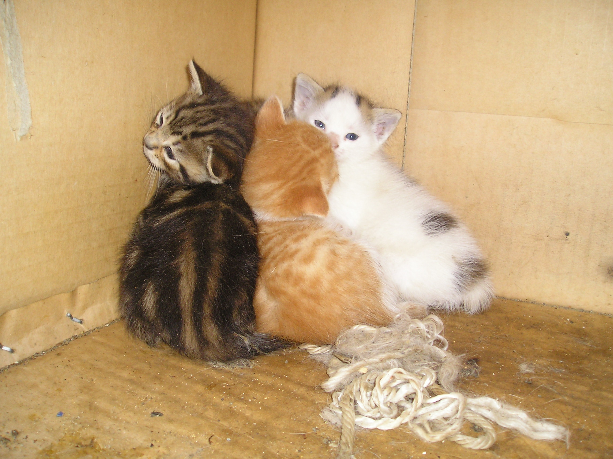
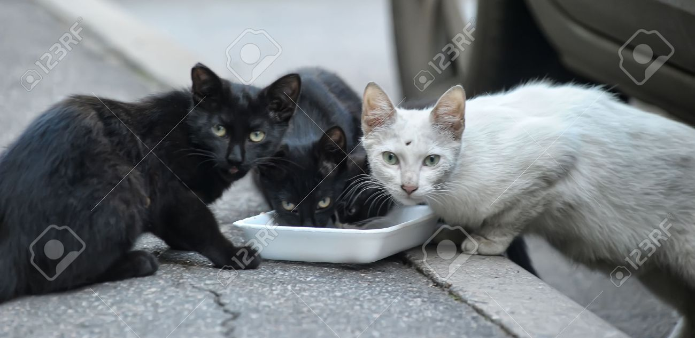

Caninos que llegan al alma


Cosas de gatos
Los gatos son muy listos. Mucho más de lo que incluso imaginamos. Saben que pueden conseguir de nosotros lo que quieran y por ello, estudios científicos demuestran que cuentan con un sistema de comunicación con el ser humano sumamente elaborado. Tan sólo hay que saber interpretar su idioma para atender a sus necesidades y hacer de su vida un placer aún mayor. Veamos cómo descifrar su lenguaje.
Ante todo hay que tener en cuenta un factor fundamental que no todo el mundo tiene presente: y es que el maullido es el último recurso al que acude el gato para comunicarse con nosotros. Antes, ha intentado avisarte mediante un sistema de transmisión de olores incomprensible para el ser humano, seguido de sendos lenguajes corporal y facial. Es decir, que ha aprendido que la única forma de hablarnos pasa por emitir sonidos, pero a costa de perder un poco la paciencia.